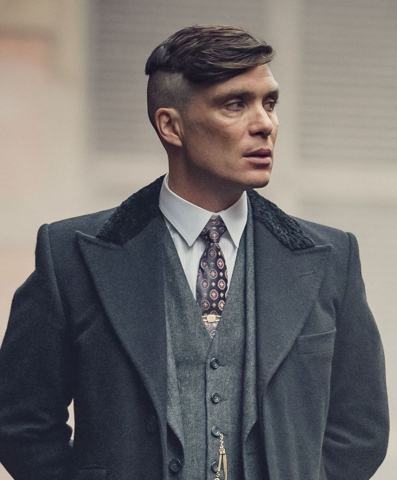

Thomas ‘Tommy’ Shelby
He is the undisputed leader of The Peaky Blinders.
A loving family man who is feared throughout Birmingham and beyond. Orchestrating his gang's rise, and very survival, he has navigated a path on to a seat in parliament. A place where his influence can reach all of England, and potentially beyond its shores.